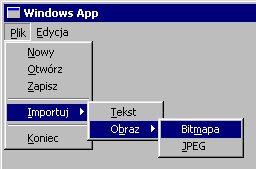
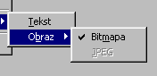
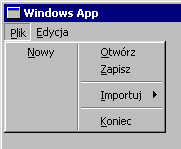
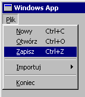
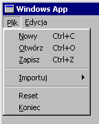
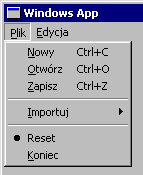
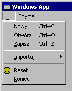
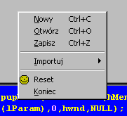

| << Dialogi, cz.3 Spis Strona g³ówna Rejestr >> |
Program windowsowy bez menu to jak komputer bez klawiatury i myszki - niby dzia³a, ale nijak siê nie mo¿na do niego dobraæ ;-). Menu jest zwyk³¹ kontrolk¹, jednak traktowan¹ w specjalny sposób. Najprostsz¹ metod¹ stworzenia menu jest napisanie skryptu *.rc. Oto przyk³adowy plik:
|
200 MENU { POPUP "&Plik" { MENUITEM "&Nowy", 100 MENUITEM "&Otwórz", 101 MENUITEM "&Zapisz", 102 MENUITEM SEPARATOR POPUP "&Importuj" { MENUITEM "&Tekst", 103 POPUP "O&braz" { MENUITEM "Bit&mapa", 104 MENUITEM "&JPEG", 105 } } MENUITEM SEPARATOR MENUITEM "&Koniec", 106 } MENUITEM "&Edycja", 108 } |
Jedyne, co musimy jeszcze zrobiæ, aby nasze pierwsze menu pojawi³o siê w okienku, to za³adowaæ je funkcj¹ LoadMenu, a nastêpnie przypisaæ do konkretnego okna. Funkcja LoadMenu ma dwa parametry: uchwyt programu (typ HINSTANCE), oraz identyfikator menu w pliku (u nas jest nim liczba 200, któr¹ "przerabiamy" na identyfikator makrem MAKEINTRESOURCE). Zwraca natomiast uchwyt do menu (jak nietrudno siê domyœliæ, uchwyt ten jest typu HMENU). Oto jak to wygl¹da:
|
HMENU hMenu = LoadMenu(hThisInstance, MAKEINTRESOURCE(200)); |
Powy¿sz¹ linijkê kodu powinieneœ wstawiæ PRZED instrukcj¹ tworz¹c¹ okno (CreateWindowEx), poniewa¿ jak ju¿ okno bêdzie gotowe, trudniej nam bêdzie wstawiæ do niego menu ;-). Oczywiœcie w miejsce hThisInstance wstawiasz swój w³asny uchwyt do aplikacji.
Mamy wiêc uchwyt do nowego menu, teraz tylko wstawimy go do funkcji CreateWindowEx, ¿eby menu pojawi³o siê w g³ównym oknie naszego programiku. Pamiêtasz trzeci od koñca parametr funkcji CreateWindowEx? Zwykle ustawialiœmy go na NULL, ewentualnie gdy u¿ywaliœmy tej funkcji do tworzenia kontrolek, to wstawialiœmy tam identyfikator kontrolki. Teraz po prostu wpisujemy w to miejsce hMenu, czyli nasz uchwyt do menu i ju¿ mo¿emy podziwiaæ efekty:

Teraz warto by sobie omówiæ te wszystkie zaklêcia, których u¿yliœmy w skrypcie ;-). Ka¿da pozycja menu odpowiada jednemu s³owu MENUITEM, po którym nastêpuje etykieta menu oraz identyfikator danej pozycji. W etykiecie mog¹ wyst¹piæ symbole &, które oznaczaj¹ literkê, która bêdzie w danym menu podkreœlona. Chyba wiesz, o co biega - dziêki temu bêdzie mo¿na obs³ugiwaæ twoje menu z klawiatury (prawy ALT + litera) i w dodatku bêdzie siê to dzia³o automatycznie, bez koniecznoœci pisania dodatkowego kodu (!).
Identyfikatory kolejnych pozycji menu musz¹ byæ unikalne w skali programu (tak jak wszystkie inne zasoby w plikach *.rc, rzecz jasna). Oczywiœcie zamiast "go³ych" liczb warto stosowaæ "sta³e", np.:
|
#define MNU_PLIK_NOWY 100 |
Zamiast MENUITEM mo¿emy u¿yæ POPUP. Jak ju¿ pewnie siê domyœlasz, dziêki temu dana pozycja menu bêdzie rozwijalna, czyli najechanie na ni¹ mysz¹ doprowadzi do pojawienia siê kolejnego poziomu menu, tak jak na obrazku powy¿ej. Pozycja menu zdefiniowana przez POPUP nie mo¿e zostaæ wybrana (jest tylko, hmm, etapem przejœciowym w drodze do kolejnej pozycji ;-)), tote¿ nie posiada w³asnego identyfikatora.
Specjalnym rodzajem pozycji menu jest MENUITEM SEPARATOR - czyli kreski rozdzielaj¹ce poszczególne grupy pozycji menu, ¿eby menu wygl¹da³o estetyczniej. Tutaj chyba nie potrzeba dalszych komentarzy.
Jako stary windowsowy wyjadacz na pewno niejedno menu ju¿ widzia³eœ ;-). Tak wiêc pewnie czujesz, ¿e czegoœ ci jeszcze brak. Nawet taka prosta aplikacyjka jak Notatnik, w którym piszê w³aœnie ten kurs, posiada zwykle dodatkowe drobne usprawnienia w swoim menu - niektóre pozycje s¹ "zafajkowane" (checked), inne s¹ nieaktywne, czyli nie mo¿na ich chwilowo wybraæ i s¹ wypisane szarym kolorem. Pierwszy efekt osi¹gamy przez dodanie (po przecinku) s³owa CHECKED do konkretnej pozycji menu:
|
MENUITEM "Bit&mapa", 104, CHECKED |
Niestety, "fajeczka" nie zniknie automatycznie po klikniêciu na zafajkowan¹ pozycjê :-(. Musimy o to zadbaæ sami (o tym póŸniej). Aby zaœ chwilowo wy³¹czyæ dan¹ pozycjê, dodajemy w ten sam sposób s³owo GRAYED:
| MENUITEM "&JPEG", 105, GRAYED |

Obydwu "efektów" mo¿emy u¿yæ jednoczeœnie:
| MENUITEM "Bit&mapa", 104, CHECKED, GRAYED |
Warto wiedzieæ o parametrach MENUBREAK i MENUBARBREAK. Pozwalaj¹ one podzieliæ dane podmenu na kilka kolumn, przy czym MENUBARBREAK dodatkowo wstawia pionow¹ liniê w miejscu podzia³u, a MENUBREAK - nie. I tak na przyk³ad gdybyœmy dodali MENUBARBREAK do pozycji 'Otwórz', to orzymalibyœmy taki efekt:
|
MENUITEM "&Otwórz", 101, MENUBARBREAK |

Niezbyt ³adne, ale gdy mamy w menu wiêcej pozycji, rozwi¹zanie takie bywa ca³kiem przydatne. Ciekawe rezultaty mo¿e daæ u¿ycie tych dwóch parametrów wobec pozycji z g³ównej belki menu (np. Plik, Edycja itp.). Kiedy tak zrobimy, bêd¹ one u³o¿one jedna pod drug¹, zamiast obok siebie. W tym przypadku nie ma ¿adnej ró¿nicy miêdzy MENUBREAK i MENUBARBREAK.
Wiêkszoœæ komend menu posiada klawiaturowe skróty, umo¿liwiaj¹ce wykonanie tych komend bez koniecznoœci rozwijania menu. Skróty wyœwietlane s¹ po prawej stronie menu i zazwyczaj s¹ to kombinacje Ctrl+litera. Mo¿emy sobie utworzyæ takie skróty, coby jeszcze bardziej uzywilizowaæ nasz przeœliczne menu:
|
MENUITEM "&Nowy\tCtrl+N", 100 MENUITEM "&Otwórz\tCtrl+O", 101 MENUITEM "&Zapisz\tCtrl+Z", 102 |

Jak widaæ, polega to po prostu na dodaniu do etykiety tabulacji (symbol \t) i wpisaniu skrótu. Niestety, automatycznie ten system skrótów nie dzia³a, musimy skorzystaæ z tzw. akceleratorów, o których dowiemy siê w osobnej czêœci tego kursu.
Czasami mo¿emy chcieæ zmieniæ menu w trakcie wykonywania programu, np. gdy dajemy u¿ytkownikowi mo¿liwoœæ dostosowania menu do w³asnych potrzeb. W takich wypadkach mo¿emy u¿yæ funkcji CreateMenu i CreatePopupMenu do stworzenia nowego, pustego menu, po czym wype³niæ je przy pomocy funkcji InsertMenuItem. Oczywiœcie nic nie stoi na przeszkodzie, by dodaæ now¹ pozycjê do gotowego menu stworzonego z pliku zasobów, co za moment sobie zrobimy.
S³usznie siê obawiasz - czeka nas teraz pracowite wype³nianie struktury. Zowie siê ona MENUITEMINFO i jak zwykle ma sporo pól, ale na szczêœcie nie wszystkie musimy wype³niaæ (te¿ jak zwykle). Robiliœmy ju¿ takie rzeczy nieraz, wiêc szczegó³y pomijam. Oto kompletna struktura, gotowa do u¿ycia:
|
MENUITEMINFO mii; ZeroMemory(&mii, sizeof(mii)); mii.cbSize = sizeof(mii); mii.fMask = MIIM_ID | MIIM_TYPE; mii.fType = MFT_STRING; mii.wID = 110; mii.dwTypeData = "Reset"; |
Pole fMask okreœla, jakie z pozosta³ych pól bêdziemy wype³niaæ. Potrzebujemy tylko dwóch: fType i wID, co widaæ po doborze flag (MIIM_TYPE i MIIM_ID). W polu fType dajemy sta³¹ MFT_STRING, co oznacza, ¿e chcemy podaæ etykietê dla naszej nowej pozycji menu. Etykietê tê wrzucamy ¿ywcem do pola dwTypeData. Pozostaje tylko ustaliæ identyfikator dla nowej pozycji menu - niech to bêdzie liczba 110.
Nowa pozycja menu gotowa - zrobiliœmy polecenie do resetowania kompa, ale z nas wredne istoty ;-). Teraz korzystamy ze wspomnianej ju¿ funkcji InsertMenuItem. Podajemy jej kolejno: uchwyt do menu, identyfikator pozycji PRZED któr¹ chcemy umieœciæ nasz¹ now¹ pozycjê (tutaj wstawiamy 'Reset' przed pole 'Koniec', wiêc musimy podaæ identyfikator tego ostatniego - 106), wartoœæ FALSE (lub TRUE, jeœli zamiast identyfikatora podaliœmy indeks pozycji), wreszcie adres naszej wype³nionej struktury:
|
InsertMenuItem(hMenu, 106, FALSE, &mii); |
Powy¿sz¹ instrukcjê mo¿emy umieœciæ zarówno przed utworzeniem okna zawieraj¹cego nasze menu, jak i po nim. Tadaaa! Gotowe:

Na razie umiemy tylko dodawaæ "zwyk³e" pozycje menu - a jak dodaæ pozycje nieaktywne lub zafajkowane? Otó¿ musimy siê dodatkowo zainteresowaæ polem fState naszej struktury. Jeœli wpisaæ do tego pola MFS_GRAYED - nowa pozycja menu bêdzie "szara", jeœli damy MFS_CHECKED - zafajkujemy j¹ :-). Oczywiœcie musimy uwzglêdniæ pole fState przy wype³nianiu fMask:
|
mii.fMask = MIIM_ID | MIIM_TYPE | MIIM_STATE; mii.fState = MFS_CHECKED | MFS_ GRAYED; |
...i ju¿ mamy nasz¹ pozycjê 'Reset' oznaczon¹ faj¹ i nieaktywn¹ w dodatku.
Aby wstawiæ separator, w miejsce MFT_STRING dajemy MFT_SEPARATOR. Oczywiœcie wtedy ustawianie etykiety ani identyfikatora nie jest konieczne.
Jak byæ mo¿e zauwa¿y³eœ, w ró¿nych programach oprócz "fajek" wystêpuj¹ te¿ kó³eczka. Mo¿emy te¿ sobie takie zrobiæ. Wystarczy do fType dorzuciæ sta³¹ MFT_RADIOCHECK:
|
mii.fType = MFT_STRING | MFT_RADIOCHECK; mii.fState = MFS_CHECKED; |

Jak widzimy, "rêczne" dodawanie menu jest zbyt pracoch³onne, ¿eby korzystaæ z tej mo¿liwoœci do stworzenia ca³ego menu, wiêc cieszmy siê, ¿e dobrzy ludzie wynaleŸli pliki skryptowe ;-).
Naprawdê wypasione programy, jak choæby Dev-C++, maj¹ w menu ikonki. My te¿ takie chcemy, a dla chc¹cego jak wiadomo nie ma nic trudnego ;-). Mo¿emy wykorzystaæ fakt, ¿e domyœlne fajki i kó³eczka dla oznaczenia stanu CHECKED mog¹ zostaæ wymienione na w³asne obrazki, niekoniecznie przedstawiaj¹ce fajki i kó³ka ;-).
Do wyboru mamy: wype³nienie pól hbmpChecked i hbmpUnchecked naszej kochanej struktury uchwytami do bitmap, które musimy sobie sami wczytaæ, oraz skorzystanie z funkcji SetMenuItemBitmaps, która zrobi to samo przy mniejszej iloœci pisaniny ;-). Oczywiœcie wybieramy tê drug¹ opcjê:
|
HBITMAP hbmMorda = (HBITMAP)LoadImage(hThisInstance, "morda.bmp", IMAGE_BITMAP, 0,0, LR_LOADFROMFILE|LR_LOADTRANSPARENT); SetMenuItemBitmaps(hMenu, 110, MF_BYCOMMAND, hbmMorda, hbmMorda); |
Jeœli pamiêtasz jeszcze kurs grafiki w WinAPI, to pewnie wiesz, jak korzystaæ z funkcji LoadImage. Dodaliœmy do niej jedn¹ flagê - LR_LOADTRANSPARENT. Dziêki niej funkcja zastêpuje kolor pierwszego piksela naszego obrazka w ca³ej bitmapie na domyœlny kolor systemowy menu, dziêki czemu nasz obrazek ma "przezroczyste" t³o.
Zanim przyst¹pisz do wybierania obrazka, zadbaj o jego wymiary. U mnie wynosz¹ one 13x13 pikseli, co prawdopodobnie jest domyœlnym ustawieniem Windowsa. Aby wszystko by³o cacy, mo¿esz pobraæ te wymiary funkcj¹ GetSystemMetrics, stosuj¹c flagi CXMENUCHECK i CYMENUCHECK, a nastêpnie odpowiednio wyskalowaæ wczytan¹ bitmapê (najlepiej zrobiæ to od razu w wywo³aniu funkcji LoadImage).
Funkcja SetMenuItemBitmaps pobiera kolejno: uchwyt menu, identyfikator pozycji, której dorabiamy ikonkê, flagê MF_BYCOMMAND (oznacza, ¿e poprzedni parametr jest identyfikatorem pozycji menu), wreszcie najwa¿niejsze - dwa uchwyty; bitmapa "zafajkowana" i bitmapa "odfajkowana". U nas daliœmy do obu identyczn¹ bitmapê, co zreszt¹ robi siê prawie zawsze przy korzystaniu z ikon menu. Efekt? Proszê bardzo:

To naprawdê fajnie, ¿e umiemy ju¿ zrobiæ menu ze wszelkimi bajerami, ale co nam po nim, skoro klikanie na tym menu nic nie daje? Trzeba zrobiæ obs³ugê komunikatów. Klikniêcie na wybranej pozycji menu powoduje wys³anie komunikatu WM_COMMAND. Jak nietrudno siê domyœliæ, parametr wParam (a œciœlej: jego dolne s³owo) zawiera identyfikator pozycji menu, która zosta³a klikniêta. Tak wiêc nietrudno bêdzie przypisaæ odpowiednim pozycjom menu jakieœ dzia³anie:
|
case WM_COMMAND: { if(LOWORD(wParam) == 106) PostQuitMessage(0); else MessageBox(hwnd, "Dziêkujemy za skorzystanie z naszego menu ;-P", "Mesyd¿", MB_ICONINFORMATION); } break; |
Tutaj poszliœmy sobie na ³atwiznê i dodaliœmy dzia³anie menu 'Koniec', natomiast wybranie jakiejkolwiek innej pozycji spowoduje wyœwietlenie okna z wiadomoœci¹.
Skoro mamy ju¿ mo¿liwoœci, to nauczmy siê wreszcie, co zrobiæ z tymi cholernymi fajeczkami, ¿eby dzia³a³y jak Pan Bóg przykaza³. Wszystkie atrybuty menu mo¿na zmieniæ funkcj¹ SetMenuItemInfo, która korzysta z omówionej ju¿ struktury MENUITEMINFO. Nie przepadamy jednak za t¹ struktur¹ i korzystamy z niej tylko wtedy, gdy ju¿ naprawdê nie da siê inaczej. A w przypadku fajeczek siê da, bo mamy w zanadrzu ca³kiem mi³¹ funkcyjkê CheckMenuItem. Wywo³uje siê j¹ bardzo podobnie do SetMenuItemBitmaps, tyle ¿e do flag (trzeci argument) dodajemy dodatkowo MF_CHECKED lub MF_UNCHECKED (no i oczywiœcie nie podajemy uchwytów do bitmap, bo nie do tego ta funkcja s³u¿y).
Przechodz¹c do praktyki - potrzebowaæ bêdziemy globalnej zmiennej, przechowuj¹cej stan danej pozycji menu
|
BOOL g_Checked = FALSE; |
Nastêpnie wybieramy sobie jak¹œ pozycjê menu, która ma byæ fajkowana - niech to bêdzie ta z plikiem JPEG w etykiecie (identyfikator: 105). W obs³udze WM_COMMAND piszemy:
|
case WM_COMMAND: { if(LOWORD(wParam) == 105) { g_Checked = ~g_Checked; CheckMenuItem(hMenu, 105, MF_BYCOMMAND | (g_Checked)?MF_CHECKED:MF_UNCHECKED); } } break; |
Jeœli korzystasz raczej z kó³eczek, ni¿ z fajeczek, czyli masz grupê pozycji menu, z których tylko jedna mo¿e byæ w danym momencie zaznaczona, to przydatniejsza bêdzie dla ciebie funkcja CheckMenuRadioItem, której dodatkowo podajemy identyfikatory pierwszej i ostatniej pozycji w grupie, dziêki czemu mo¿e ona odznaczyæ wczeœniej zaznaczon¹ pozycjê i zaznaczyæ now¹ (heh ;-)).
Ostatni¹ rzecz¹ zwi¹zan¹ z menu, jak¹ sobie omówimy, bêd¹ menu
Oto co trzeba zrobiæ, ¿eby prawy przycisk gryzonia pokazywa³ nam menu 'Plik' w dowolnym miejscu naszego okienka:
|
TrackPopupMenu(GetSubMenu(hMenu,0),0,LOWORD(lParam), HIWORD(lParam),0,hwnd,NULL); |
Pierwszy argument tej fajnej funkcji s³u¿y, jak sama nazwa wskazuje, do pobrania podmenu. Podmenu to takie menu, które rozwija siê w dó³ lub w bok. Aby pobraæ uchwyt podmenu 'Plik', musimy podaæ funkcji GetSubMenu wartoœæ zero jako drugi argument, poniewa¿ nasze menu 'Plik' jest na samym poczatku ca³ego menu.
Nastêpne dwa atrybuty to wspó³rzêdne, gdzie ma siê pojawiæ menu kontekstowe - dajemy tu wspó³rzêdne klikniêcia. Nastêpny argument jest zarezerwowany

| << Dialogi, cz.3 Spis Strona g³ówna Rejestr >> |